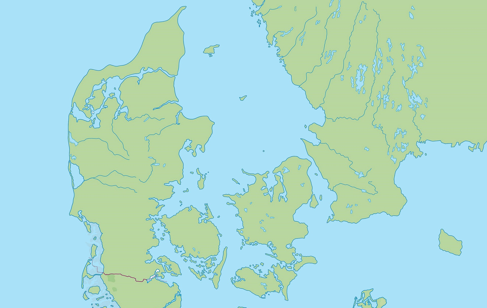

Lige under København i Køge Bugt vågnede jorden – og rystede hele Sjælland

Tryk på knapperne for at vise eller skjule de geologiske linjer.
Onsdag eftermiddag den 20. maj 2026 sad mange danskere derhjemme eller på arbejde. Pludselig begyndte gulvet at buldre og ryste. Nogle troede først, det var en stor lastbil. Andre troede, det var torden.
Men det var et rigtigt jordskælv – et af de største, der nogensinde er målt i Danmark! Hunde gøede, glas klirrede, og et tv faldt sågar ned fra væggen på Nørrebro. Heldigvis kom ingen til skade.
Under sidste istid lå en 3 km tyk iskappe oven på Skandinavien. Den var så tung, at landet blev presset ned i jordens dybe lag — ligesom når man sætter sig på en blød sofapude.
Da isen smeltede for ca. 10.000 år siden, begyndte landet langsomt at rejse sig igen. Det sker stadig den dag i dag — og det sker ujævnt. Hen over Danmark løber en usynlig vippelinje fra Ringkøbing tværs over Fyn til Fakse:
🔼 Nord for linjen hæver landet sig. Skagen vinder mest med +1,75 mm/år. København og Aarhus hæver sig med +0,5 mm/år.
🔽 Syd for linjen synker landet med op til −0,4 mm/år. Det er ekstra slemt for Vadehavet, fordi landet synker, samtidig med at havet stiger.
Nyere GPS-målinger har fundet endnu en vippelinje, der løber sydligere — fra Fanø over Sønderborg til Gedser. Spændinger fra denne langsomme bevægelse kan udløse jordskælv.
Tværs gennem Danmark løber en gammel revne i jordskorpen, der hedder Sorgenfrei-Tornquistzonen. Den er flere milliarder år gammel — fra dengang Europa først blev samlet til ét kontinent.
Revnen går fra Vesterhavet gennem Nordjylland, nord om Sjælland, gennem Skåne og ned mod Bornholm. Det er en svaghedslinje, hvor stivt grundfjeld møder blødere lag.
Næsten alle danske jordskælv sker i eller tæt på denne zone — også skælvet den 20. maj 2026 i Køge Bugt.
Vi ligger midt på en stor stiv plade — den eurasiske plade. Men pladen bliver skubbet fra to sider:
Afrika presser sig nordpå mod Europa med nogle få centimeter om året. Det er derfor Alperne stadig vokser.
Island ligger lige på den linje hvor Nordamerika og Eurasien glider fra hinanden. Halvdelen af Island skubber Europa østpå.
Disse skub bygger spændinger op inde i pladen. Når trykket bliver for stort på et svagt sted — som vores gamle revne — så knæk!
Træk i tidslinjen eller tryk på Afspil og se hvordan landet rejser sig efter istidens enorme vægt.
For 10.000 år siden lå en 3 km tyk iskappe oven på Skandinavien. Da isen smeltede, begyndte landet at tippe omkring vippelinjen — og det gør det stadig.
Hvis du kunne skære jorden over som et æble, ville du opdage, at den har fire forskellige lag. Klik på lagene for at lære mere!
Jorden er bygget op af lag som en kæmpe løg. Klik dig igennem dem!
Jordens hårde overflade er som et puslespil af kæmpestore plader, der langsomt glider rundt – kun nogle få centimeter om året (cirka lige så hurtigt som dine negle vokser!). Når de støder ind i hinanden, sker der jordskælv og vulkanudbrud.
Når to plader trækker sig væk fra hinanden, vælder varm magma op nedefra og laver nyt land. Det sker midt i Atlanterhavet!
Når to plader krasher ind i hinanden, presses jorden op og laver bjerge. Sådan blev Himalaya til – verdens højeste bjergkæde!
Når to plader skubber sig forbi hinanden, kan de pludselig hænge fast – og når de slipper, BRAGER det! Sådan opstår de fleste jordskælv.
Ikke alle jordskælv er ens! Der findes faktisk fire forskellige slags.
Det allermest almindelige! Det sker, når store plader i jordens skorpe presser, river eller skubber til hinanden. Skælvet i København var et tektonisk skælv.
Når magma bevæger sig op gennem en vulkan, kan jorden ryste. Det er ofte advarslen om, at vulkanen snart går i udbrud!
Hvis en stor hule eller en gammel mineskakt styrter sammen langt nede i jorden, kan det give et lille jordskælv lokalt.
Store sprængninger, eksplosioner eller atombombetests kan også få jorden til at ryste. Det kaldes et menneskeskabt jordskælv.
En vulkan er et sted, hvor flydende sten kaldet magma presser sig op fra dybt nede i jorden. Når det sprøjter ud, kalder vi det lava. Tryk på knappen – så går vulkanen i udbrud!
Vulkaner kommer i forskellige former – nogle er flade som tallerkner, andre står spidse som lagkager!
Flad og bred som et skjold. Lavaen er meget tynd og flydende og løber langt – ikke så farlig, men ret pæn at se på!
Den klassiske "kegle-vulkan"! Spids og høj med skiftende lag af aske og lava. Disse kan eksplodere ret voldsomt!
En lille, simpel vulkan som en bunke sand. Den smider aske og små stenstykker ud, men er sjældent farlig. Lever ofte kun kort tid!
Den største og mest sjældne! Efter et kæmpe udbrud falder toppen ned og laver et stort hul – ofte fyldt med vand som en sø. De er HELT enorme!
Hver dag rystes jorden tusindvis af gange – men de fleste er så små, at kun fine instrumenter kan måle dem.
Et skælv på 5 er ikke dobbelt så stort som et på 4 – det er 32 gange kraftigere! Skalaen tæller meget hurtigt op.
Hunde, fugle og andre dyr kan ofte mærke et jordskælv før mennesker. De hører eller fornemmer de første rystelser.
Danmark ligger inde midt på en plade, så vi mærker næsten aldrig jordskælv. Skælvet den 20. maj var ét af de største nogensinde her!
Lige nu er der omkring 1.500 vulkaner på jorden, som stadig kan gå i udbrud. Mange af dem ligger under havet!
Lava kan være op til 1.200 grader varm! Det er mere end ti gange varmere end vand, der koger.